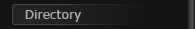 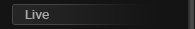 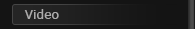 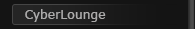 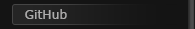 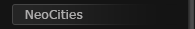 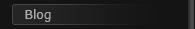 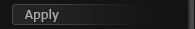 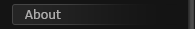 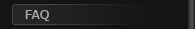
| Frequently Asked Questions |
|---|
What is this?
The Network Neighborhood is a private webring, like the ones from the 90s and early 2000s. We make websites in that style because of our combined passions for WWW creation, HyperText, and the general design aesthetics of the era.
You do realize that it's 2016, right?
Of course! Many of us do still have an interest in newer technology, but that’s not really what we focus on here. For some of us, it’s still 1996.
That sounds cool! How do I become a member?
You came at the right time! Membership Applications are now available. Just click the "Apply" button on our homepage or to the left, on the navigation.
So is this all just "vaporwave" or something?
While some of us do have an interest in the vaporwave aesthetic and music genre, the Network Neighborhood is a bit more focused on 90s technology than vaporwave.
Why are you using NeoCities? Could you not afford a better, paid webhost?
We could, but working with NeoCities’ limitations can make it more interesting. When we first started in 2014, we were inspired by the webrings of the 90s on sites like GeoCities and Angelfire, and NeoCities seemed to be a perfect fit for our needs. (And yes, we realize that NeoCities isn't supposed to be capitalized that way.)

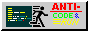
© 2014-2016 Network Neighborhood.